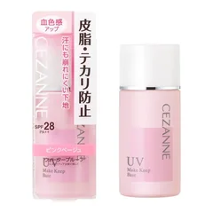
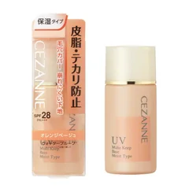
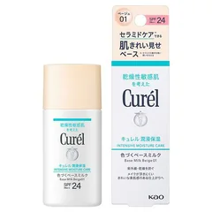
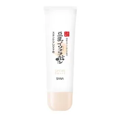

鼻とおでこのテカりが一番困る人

セザンヌ
皮脂テカリ防止下地 ピンクベージュ
30ml
¥660税込・出典掲載価格
選び方と声
- 選ぶ条件：テカる場所（鼻・おでこ）が決まっている人。指先に少し取ってテカる所に置くだけでもいい
- メーカーの説明では、化粧持ち持続成分配合・無香料・紫外線吸収剤不使用
気になる声気になる点：乾く頬まで同じ物で塗ると、つっぱると感じる人もいる。頬が乾くなら保湿タイプと塗り分ける
販売価格・容量・送料はリンク先でご確認ください
THE COSME EDIT / 2026.11.05
動画と同じ写真・名前・順番で並べています。見出しは順位ではなく、選ぶ条件です。4つそろえる前提ではありません。高い下地を買ったのに数日でテカった・吹き出物が出た人が見直すこと（夕方の鏡でテカる場所と乾く場所を見る／売り場では小鼻の横に塗ってもらい半日すごしてから決める／かぶれやすい人は腕の内側などの目立たない所で試し翌日を見る（ルルルン公式のよくある質問）／赤み・はれ・かゆみ・刺激が出たら使用をやめ皮膚科へ（各商品の使用上の注意）／買った日に箱の裏（成分表）を撮っておく）を会話でまとめました。まずは買わなくてもできることを試してから、自分に合う1つだけ選んでください。ガールズちゃんねるの「デパコスが肌に合わない…」のトピから声を集め、ルルルン公式のよくある質問と各商品のメーカー説明で確かめたものです。商品の特徴はメーカーの説明で、感じ方には個人差があります。よくなると約束する話ではありません。赤み・かゆみ・刺激が続くときは皮膚科で相談してください。
04 ITEMS 動画で紹介した商品
動画では商品のほかに、話題の一本を名前だけで選ぶ・売り場で塗らずに買う・合わないのにもったいなくて塗り続けるという3つのつまずき、テカる場所と乾く場所での塗り分け、エタノールなど成分表の見方、デパコスを選ぶ良さ、吹き出物が出ている間は顔を休ませることも話しています。
価格は出典掲載時のものです。楽天の現在価格とは異なる場合があります。

セザンヌ
30ml
¥660税込・出典掲載価格
選び方と声
気になる声気になる点：乾く頬まで同じ物で塗ると、つっぱると感じる人もいる。頬が乾くなら保湿タイプと塗り分ける
販売価格・容量・送料はリンク先でご確認ください

セザンヌ
30ml
¥770税込・出典掲載価格
選び方と声
気になる声気になる点：オレンジベージュは色白の人だと浮くことがある。試せるなら首と比べて見る
販売価格・容量・送料はリンク先でご確認ください

キュレル
30ml
¥1,660税込・出典掲載価格
選び方と声
気になる声気になる点：すべての人にかぶれやにきびが起きないわけではない（メーカー）。4つの中で一番高いので、腕の内側で試してから
販売価格・容量・送料はリンク先でご確認ください

なめらか本舗
50g
¥900税込・出典掲載価格
選び方と声
気になる声気になる点：成分にエタノールが入っている。エタノールでピリッとしたことがある人は、箱の裏を見てから
販売価格・容量・送料はリンク先でご確認ください
SOURCE & NOTES
集計期間：2026年11月4日に確認
価格は2026年11月5日に確認した税込価格です（掲載時点）。セザンヌ2品・なめらか本舗は販売元がAmazon.co.jpの商品の価格です。キュレルはAmazonの販売元がメーカー・Amazon.co.jp以外だったため、楽天のページ（送料無料・メール便）の価格です。価格は変わることがあります。購入前にリンク先でご確認ください。見出しは選ぶ条件で、順位ではありません。